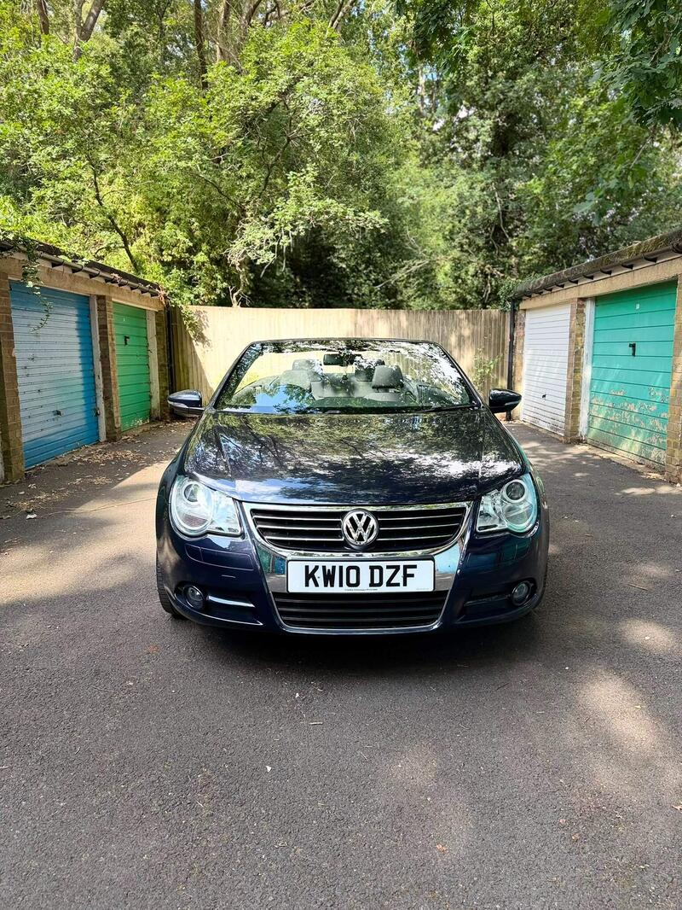
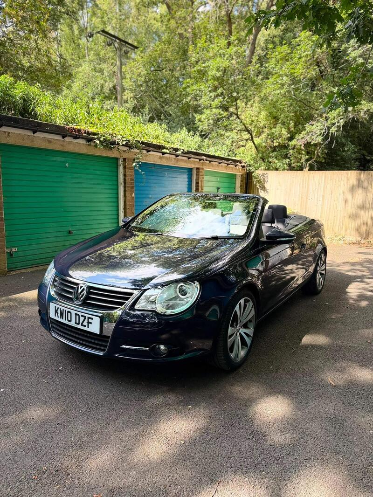
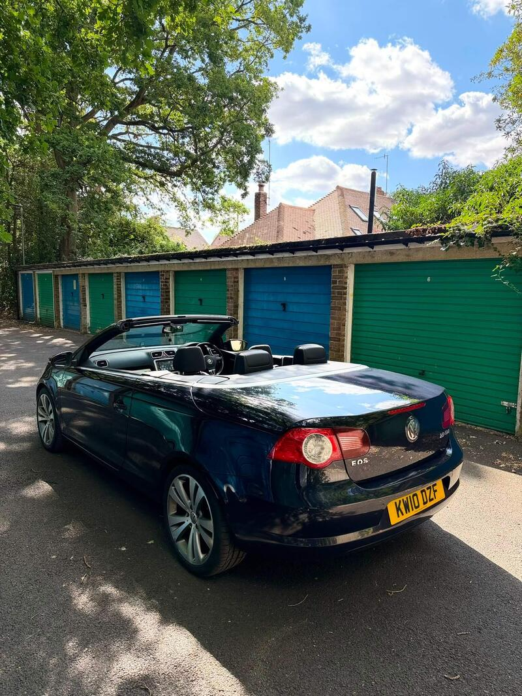

Seller photos from the AutoTrader ad.
VW Eos 2.0 TDI CR Sport
A very low-mileage Eos. A solid-roof all-rounder rather than a sports car.
Key facts
| Price | £2,800 |
|---|---|
| Year | 2010 |
| Miles | 45,000 |
| Model | VW Eos 2.0 TDI CR Sport |
| Colour | Blue |
| Registration | 2010 (10 reg) |
| Owners | 4 owners |
| Service history | Full |
| MOT | June 2027 (ad) |
| Seller | Private |
| Location | Berkhamsted |
| From GU7 | 41 mi (AutoTrader) |
| Checked | 13 Oct 2026 |
Why buy it
- Only 45k miles, full service history, belt done 2023 (ad)
- Cheap to tax (ad)
Things to check
Pour water over the roof and check the boot and spare-wheel well for damp
Diesel: check the DPF, which suits longer runs
- VW Eos weak spots
Body generally sound; the hidden risk is water pooling at the roof pump next to the spare wheel and corroding it. Roof leaks into boot/footwells (early cars worst), jammed roof mechanism, electrical gremlins; a crash-damaged roof can cost a fortune.
Seller says (extract)
“Well looked after vw EOS 2.0 diesel tdi 225 tax a year Immaculate condition Mot till June next year Had belt done in 2023 Full service history Collection from potten end, berkhamsted, herts. Bought off a family member, but it's far too good to put my dogs in! So decided to reluctantly sell it on.…”